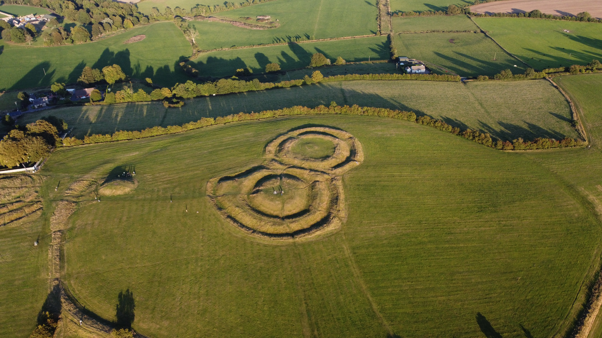
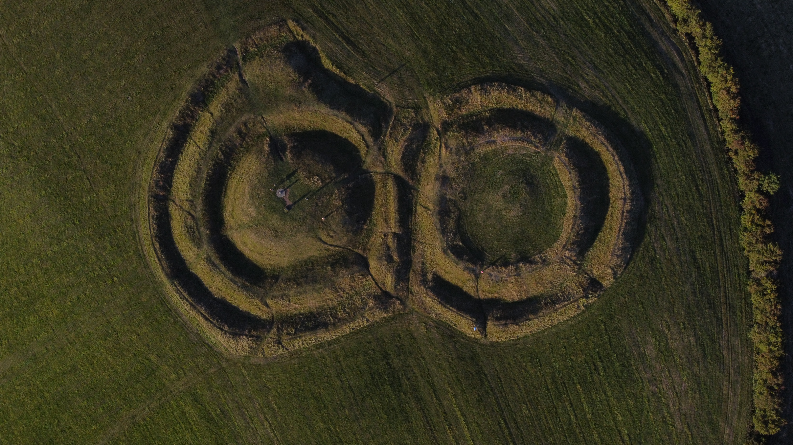

A professional GIS consultancy rooted in Ireland, delivering spatial intelligence with precision and purpose.
Boyne Geospatial was founded with a clear purpose: to bring the full power of modern GIS technology to the clients who need it most. Named after the River Boyne — one of Ireland's most historically mapped and studied landscapes — we carry that sense of place and precision into everything we do.
We operate nationally across Ireland and take on international projects where our expertise adds value. Our client base spans government agencies, local authorities, environmental consultancies, infrastructure developers, and land-use planners.
Whether you need a single map produced to a tight deadline or a complete spatial data strategy built from the ground up, we bring the same level of care, technical rigour, and cartographic craft to every project.
Work With Us"We turn complex geographic data into clear, actionable spatial intelligence — maps and analysis that actually get used."Boyne Geospatial
Every dataset, every analysis, every output is held to the highest standard of spatial accuracy. We don't cut corners on quality.
We don't apply off-the-shelf templates. Every project gets a bespoke approach matched to its specific data, scale, and audience.
Spatial data only delivers value when it's clearly communicated. We bridge the gap between complex analysis and actionable insight.
Conor is the founder of Boyne Geospatial, a GIS professional with hands-on experience across spatial data collection, analysis, and cartographic production. With a background spanning fieldwork, remote sensing, and custom map development, he brings both technical depth and practical rigour to every project.
Based in Ireland, Conor has worked across a broad range of sectors — from archaeological and environmental survey to infrastructure planning and land development. He founded Boyne Geospatial to bring high-quality GIS services to clients who need precision, clarity, and a trusted spatial partner.
Outside of client work, he develops open-source spatial tools for the GIS community and is committed to making professional-grade geospatial technology more accessible.
Get in TouchFrom UAV survey to desktop analysis — a selection of our spatial work across Ireland.

